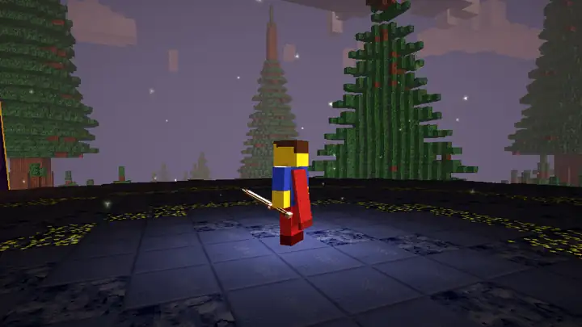
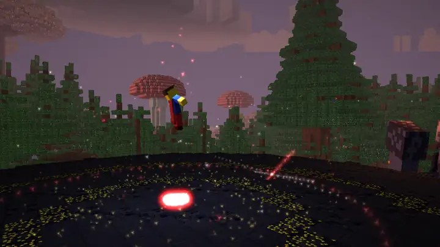

macOS
- Estrai lo zip.
- Doppio clic su
avvia.command(oppure sul file.jar). - Se il sistema si ferma: clic destro → Apri.

Un mondo enorme da esplorare, castelli e regni nel cielo, boss giganti, magia che cambia il paesaggio e domini che fermano il tempo. In sopravvivenza ogni arma te la guadagni.
Voxel World è un fantasy a blocchi con la libertà di un creativo e la fame di un survival: in Creativo hai tutto e costruisci, in Sopravvivenza parti con le mani vuote, scavi, fabbrichi, cacci schemi e riparazioni, e ogni battaglia lascia il segno.
Montagne alte oltre duecento blocchi, alberi colossali, caverne a tema, tredici biomi e oltre un centinaio di strutture: castelli imponenti, piramidi, regni abbandonati, isole nel cielo e dojo giapponesi nascosti tra i ciliegi.

Sei scuole, cinquantaquattro incantesimi e una settima scuola segreta, quella dei Domini. Ogni magia disegna un cerchio magico, cambia il terreno e fa tremare lo schermo. In sopravvivenza le studi con schegge ed essenze e le fai crescere lanciandole.

Catene di colpi per ogni arma, parata perfetta, schivata che rallenta il tempo, contrattacchi e colpi finali che spaccano il terreno. Dalle sette arti marziali alle classi dei dojo: più colpisci, più sali di rango.

Niente blocchi gratis: li scavi. Le armi migliori richiedono schemi trovati nei forzieri antichi e la Forgia runica; armi e armature si consumano e vanno riparate; il freddo e il caldo contano; se muori, la tua borsa resta in una tomba segnata da una colonna di luce.

L'eroe si alza in volo, pronuncia le parole, e il mondo si apre. Le scene qui sotto sono il gioco vero, ripreso al rallentatore: è lo stesso spettacolo che vedi dietro al menu.

Tutte catturate dal gioco vero, senza ritocchi. Clicca per ingrandire.
Un solo pacchetto per macOS, Windows e Linux. È una beta: aspettati qualche spigolo, e se ne trovi uno scrivimi.
Dentro trovi il gioco (un unico file .jar con tutto), gli script di avvio per ogni sistema e un LEGGIMI.
Solo il file .jar (15 MB) · LEGGIMI
SHA-256 pacchetto: 31109b0caa9b3caf13d2667e0a26dd2d6a9c10c004af32154172627a9a6006ab
Serve Java 17 o più recente (gratis). Una scheda grafica con OpenGL 3 e 4 GB di memoria bastano.
avvia.command (oppure sul file .jar).avvia.bat (oppure sul file .jar).chmod +x avvia.sh./avvia.sh (oppure java -jar VoxelWorld-0.1.0-beta.jar).Dopo l'avvio: guarda il Tutorial animato dal menu, crea il tuo eroe in Personaggio e apri un Nuovo mondo. In gioco F1 apre la guida. I mondi si salvano nella cartella saves accanto al gioco.
Ogni incantesimo, arma, armatura, ricetta, creatura, blocco e impresa, con i numeri veri del gioco. Più le guide per cominciare, sopravvivere e battere il Re Eterno.
Voxel World lo fa CBOUQ. Un bug, un'idea, una collaborazione o solo un saluto: scrivimi dove preferisci.